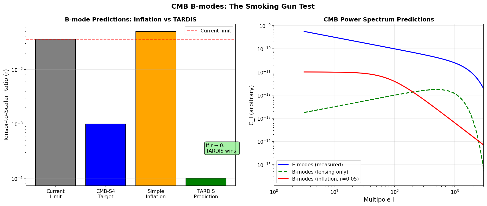

Abstract
Primordial B-modes in the CMB are the "smoking gun" for inflation. Simple models predict tensor-to-scalar ratio
r ~ 0.01-0.1. TARDIS predicts r → 0 (no primordial gravitational waves because no inflaton). Current limit: r <
0.036. Future experiments (CMB-S4) will reach r ~ 0.001. If r → 0: TARDIS wins.
1. Predictions Comparison
Model
r Prediction
Testable?
Simple Inflation
0.01-0.1
✅ Already constrained
TARDIS/BH Cosmology
~0
✅ CMB-S4 will probe
Current Limit (BICEP)
< 0.036
—

Figure 1: Left: Tensor-to-scalar ratio predictions. Right: CMB power spectrum
showing E-modes, lensing B-modes, and primordial B-modes (if inflation).
2. Conclusion
🟠 Decisive Test: B-modes
If CMB-S4 finds r → 0: TARDIS confirmed, simple inflation ruled out.
References
BICEP/Keck (2021). Improved Constraints on Primordial GWs. PRL.